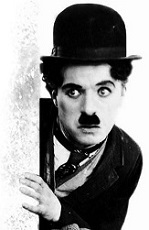
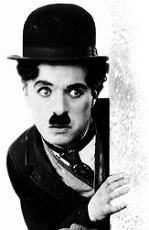

  Charles Spencer «Charlie» Chaplin (Londres, Inglaterra, Reino Unido; 16 de abril de 1889-Corsier-sur-Vevey, Suiza; 25 de diciembre de 1977) fue un actor, humorista, compositor, productor, guionista, director, escritor y editor inglés.Wikipedia
Adquirió gran popularidad en el cine mudo gracias a las múltiples películas que realizó con su personaje Charlot. A partir de entonces, es ampliamente considerado un símbolo del humorismo y del cine mudo. Para el final de la Primera Guerra Mundial, era uno de los hombres más reconocidos de la cinematografía mundial.
Un día sin reír es un día perdido
Ríe y el mundo reirá contigo; llora y el mundo, dándote la espalda, te dejará llorar.
No hay nada permanente en este malvado mundo. Ni siquiera nuestros problemas.
Sin haber conocido la miseria es imposible valorar el lujo.
Hay que tener fe en uno mismo. Ahí reside el secreto. Aún cuando estaba en el orfanato y recorría las calles buscando qué comer para vivir, incluso entonces, me consideraba el actor más grande del mundo. Sin la absoluta confianza en sí mismo, uno está destinado al fracaso.
Ir al inicio de la página